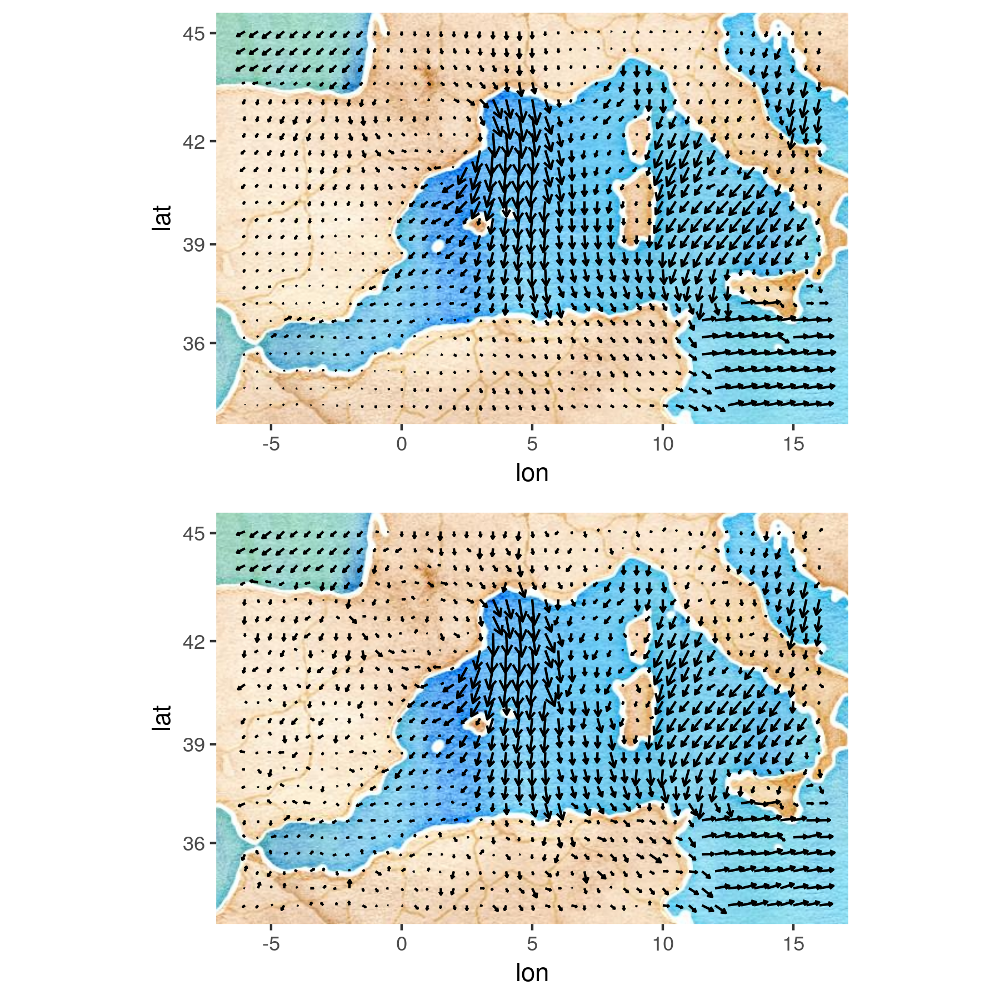

library("Matrix")
library("ggmap")
library("ggquiver")
library("STRbook")Appendix E — Case Study: Physical-Statistical Bayesian Hierarchical Model for Predicting Mediterranean Surface Winds
In this section we present a specific and detailed example of how to develop a physically motivated bivariate spatio-temporal model for the purpose of predicting near-surface wind fields in the Mediterranean Sea. The implementation of this model in R is given below.
Consider a simple analytical model for the surface wind known as the Rayleigh friction equations (e.g., Stevens et al., 2002):
\[\begin{align*} \frac{\partial u}{\partial t} &= f v - \frac{1}{\rho_0} \frac{\partial P}{\partial x} - \gamma u, \\ \frac{\partial v}{\partial t} &= - f u - \frac{1}{\rho_0} \frac{\partial P}{\partial y} - \gamma v, \end{align*}\]
where \(u\) and \(v\) are the east–west and north–south components of the wind, respectively (recall that winds are vectors with a magnitude and direction that can be decomposed into \(x\) (east–west) and \(y\) (north–south) coordinates); \(f\) is the Coriolis parameter; \(\rho_0\) is a reference atmospheric density; \(P\) is the sea-level pressure; and \(\gamma\) is the Rayleigh friction parameter. Note that \(u\), \(v\), and \(P\) are functions of time and space. As in Section D.1, simple forward differencing in time with \(\Delta_t = 1\), and centered differencing in space, give the analogous discretized form of these equations:
\[ \small u_{t+1}(i,j) = u_t(i,j) + \Delta_t \left\{ f v_t(i,j) - \frac{1}{\rho_0}\left(\frac{P_t(i+1,j) - P_t(i-1,j)}{2 \Delta_x}\right) - \gamma u_t(i,j)\right\}, \tag{E.1}\]
\[ \small v_{t+1}(i,j) = v_t(i,j) + \Delta_t\left\{ - f u_t(i,j) - \frac{1}{\rho_0}\left(\frac{P_t(i,j+1) - P_t(i,j-1)}{2 \Delta_y}\right) - \gamma v_t(i,j)\right\}, \tag{E.2}\]
where \(u_t(i,j)\), \(v_t(i,j)\), and \(P_t(i,j)\) are discretized wind components and pressure, respectively, at grid location \((i,j)\) and time \(t\), and \(\Delta_x\), and \(\Delta_y\) are the \(x\)-, and \(y\)-discretization constants, respectively. Note that this is a multivariate linear system, with each component of the wind conditioned on the past values of that component, the other component, and the difference (gradient) in pressure.
Now a simple statistical process model based on these equations can be written in vector form as:
\[ \mathbf{u}_{t+1} = \theta_{uu} \mathbf{u}_t + \theta_{uv} \mathbf{v}_t + \theta_{up} \mathbf{D}_x \mathbf{P}_t + \boldsymbol{\eta}_{u,t}, \tag{E.3}\]
\[ \mathbf{v}_{t+1} = \theta_{vv} \mathbf{v}_t + \theta_{vu} \mathbf{u}_t + \theta_{vp} \mathbf{D}_y \mathbf{P}_t + \boldsymbol{\eta}_{v,t}, \tag{E.4}\]
for \(t=1,\ldots,T-1\), where \(\mathbf{v}_t\) and \(\mathbf{u}_t\) are \(n_g\)-dimensional \((n_g = n_x \times n_y)\) vectors of the discretized \(u\) and \(v\) components, \(n_x\) and \(n_y\) being the number of grid locations in the \(x\)- and \(y\)-directions on the prediction grid; \(\mathbf{P}_t\) is an \(n_e = (n_x + 2) \times (n_y + 2)\)-dimensional vector of surface pressure values on an expanded grid (which in our example will come from data); \(\mathbf{D}_x\) and \(\mathbf{D}_y\) are \(n_g \times n_e\) matrix operators that give the centered difference in the \(x\) and \(y\) directions, respectively; and \(\boldsymbol{\eta}_{u,t} \sim iid \; Gau(0,\sigma^2_u \mathbf{I})\) and \(\boldsymbol{\eta}_{v,t} \sim iid \; Gau(0, \sigma^2_v \mathbf{I})\) are residual error processes. Although we could specify the \(\theta\)-values in Equation E.3 and Equation E.4 according to the discretization constants and \(f\) and \(\gamma\) in Equation E.1 and Equation E.2, we instead allow them to be unknown and random here (see below) and include the additive error terms to adapt to the data and to reflect the fact that the Rayleigh friction equations are a pretty rough approximation for reality. More complicated versions of this model are given in Milliff et al. (2011) and Cressie & Wikle (2011, Chapter 9) to account for spatio-temporal dependent errors as well as a random pressure process.
We have two sources of data on Mediterranean surface winds (as described in Section 2.1): gridded analysis wind and pressure data from the European Center for Medium Range Weather Forecasting (ECMWF) (these observations are complete in space and time); and higher-resolution satellite observations of near-surface winds over the ocean from the polar-orbiting QuikSCAT scatterometer (these observations are irregular in space and time). The BHM is given by a data model, a process model, and a parameter model. For modeling the Mediterranean wind data, these are defined as follows.
Data model. For \(t=1,\ldots,T\), assume \[ \mathbf{E}_{u,t} | \mathbf{u}_t, \sigma^2_e \sim indep. \; Gau(\mathbf{H}_{e} \mathbf{u}_t, \sigma^2_e \mathbf{I}), \tag{E.5}\] \[ \mathbf{E}_{v,t} | \mathbf{v}_t, \sigma^2_e \sim indep. \; Gau(\mathbf{H}_{e} \mathbf{v}_t, \sigma^2_e \mathbf{I}), \tag{E.6}\] \[ \mathbf{S}_{u,t} | \mathbf{u}_t, \sigma^2_s \sim indep. \; Gau(\mathbf{H}_{s,t} \mathbf{u}_t, \sigma^2_s \mathbf{I}), \tag{E.7}\] \[ \mathbf{S}_{v,t} | \mathbf{v}_t, \sigma^2_s \sim indep. \; Gau(\mathbf{H}_{s,t} \mathbf{v}_t, \sigma^2_s \mathbf{I}), \tag{E.8}\] where \(\mathbf{E}_{u,t}, \mathbf{E}_{v,t}\) are \(n_e\)-vectors of ECMWF observations at time \(t\), with associated \(n_e \times n_g\) incidence matrix \(\mathbf{H}_e\); and \(\mathbf{S}_{u,t}, \mathbf{S}_{v,t}\) are \(n_{s,t}\)-dimensional vectors of QuikSCAT observations at time \(t\), with associated \(n_{s,t} \times n_g\) incidence matrices, \(\mathbf{H}_{s,t}\). (Note that there are different numbers of QuikSCAT observations at each time, and there can be times for which there are no QuikSCAT observations.)
Process model. For \(t=1,\ldots,T-1\), assume
\[ \mathbf{u}_{t+1} | \mathbf{u}_t, \mathbf{v}_t, \mathbf{P}_t, \theta_{uu}, \theta_{uv}, \theta_{up}, \sigma^2_u \sim {indep.} \; {Gau}(\theta_{uu} \mathbf{u}_t + \theta_{uv} \mathbf{v}_t + \theta_{up} \mathbf{D}_x \mathbf{P}_t , \sigma^2_u \mathbf{I}),~~~~~ \tag{E.9}\]
\[ \mathbf{v}_{t+1} | \mathbf{v}_t, \mathbf{u}_t, \mathbf{P}_t, \theta_{vv}, \theta_{vu}, \theta_{vp}, \sigma^2_v \sim {indep.} \; {Gau}(\theta_{vv} \mathbf{v}_t + \theta_{vu} \mathbf{u}_t + \theta_{vp} \mathbf{D}_y \mathbf{P}_t , \sigma^2_v \mathbf{I}),~~~~~ \tag{E.10}\]
where we have pressure observations, \(\mathbf{P}_t\), from the ECMWF data within the Mediterranean wind data. We also need to specify the process’s initial conditions at time \(t=1\). Assume
\[ \mathbf{u}_1 | \boldsymbol{\mu}_{u,1}, \sigma^2_{u,1} \sim \; {Gau}(\boldsymbol{\mu}_{u,1},\sigma^2_{u,1} \mathbf{I}), \tag{E.11}\]
\[ \mathbf{v}_1 | \boldsymbol{\mu}_{v,1}, \sigma^2_{v,1} \sim \; {Gau}(\boldsymbol{\mu}_{v,1},\sigma^2_{v,1} \mathbf{I}). \tag{E.12}\]
Parameter model. All of the process-model parameters are assumed to be independent and their distributions are given by
\[ \theta_{ab} | \mu_{ab}, \sigma^2_{ab} \sim \; {Gau}(\mu_{ab}, \sigma^2_{ab}), \tag{E.13}\]
for \(ab = \{uu,vv,uv,vu,up,vp\}\). Further,
\[ \sigma^2_a | q_a, r_a \sim \; {IG}(q_a,r_a), \tag{E.14}\]
for \(a = \{u, v\}\) (where \({IG}(q_a, r_a)\) is the inverse gamma distribution with shape parameter \(q_a\) and rate parameter \(r_a\)).
Hyperparameters (fixed and specified). The following hyperparameters are specified based on scientific assumptions or to correspond to “vague” prior distributions: \(\sigma^2_e,\) \(\sigma^2_s,\) \(\{\mu_{ab},\) \(\sigma^2_{ab}:ab = uu,vv,uv,vu,up,vp\}\), \(\{q_a, r_a: a= u,v\}\), \(\boldsymbol{\mu}_{u,1}\), \(\boldsymbol{\mu}_{v,1}\), \(\sigma^2_{u,1}\), \(\sigma^2_{v,1}\). Specific values are given in the R example that follows.
Gibbs sampler. The BHM presented above is amenable to a Gibbs sampler MCMC implementation because all the full conditional distributions are available in closed form (see Cressie & Wikle, 2011, Chapter 8, for details on how to derive full conditional distributions for spatio-temporal models). Recall from Note 4.5 that the Gibbs sampler simply cycles through the full conditional distributions, sampling each variable given the most recent samples. The Gibbs sampler for the BHM of the Mediterranean winds data is outlined in Note E.1, where the equation numbers correspond to the full conditional distributions presented in the next section.
Note E.1: Gibbs Sampler for BHM of Mediterranean winds data set
Select hyperparameters: \(\sigma^2_e\), \(\sigma^2_s\), \(\{\mu_{ab}, \sigma^2_{ab}:ab = uu,vv,uv,vu,up,vp \}\), \(\{q_a, r_a: a=u,v\}\), \(\boldsymbol{\mu}_{u,1}\), \(\boldsymbol{\mu}_{v,1}\), \(\sigma^2_{u,1}\), \(\sigma^2_{v,1}\)
Select initial values: \(\{\mathbf{u}^{(0)}_t: \, t=2,\ldots,T \}\), \(\{\mathbf{v}^{(0)}_t: \, t=1,\ldots,T \}\), \(\theta_{uu}^{(0)}\), \(\theta_{vv}^{(0)}\), \(\theta_{uv}^{(0)}\), \(\theta_{vu}^{(0)}\), \(\theta_{up}^{(0)}\), \(\theta_{vp}^{(0)}\), \(\sigma_u^{2(0)}\), \(\sigma_v^{2(0)}\)
for \(\; \; i=1,2,\ldots, N_{\mathrm{gibbs}}\) do
using Equation E.15, sample from
\[ \small \mathbf{u}^{(i)}_1 | \mathbf{v}^{(i-1)}_1, \mathbf{u}^{(i-1)}_2, \mathbf{v}^{(i-1)}_2, \theta_{vu}^{(i-1)}, \theta_{uu}^{(i-1)}, \theta_{uv}^{(i-1)}, \theta_{vv}^{(i-1)}, \theta_{vp}^{(i-1)}, \theta_{up}^{(i-1)}, \sigma_u^{2(i-1)}, \sigma_v^{2(i-1)} \]
using Equation E.16 for \(t=2,\ldots,T-1\), sample from
\[\begin{eqnarray*} \; & \; & \; \mathbf{u}^{(i)}_t | \mathbf{u}^{(i)}_{t-1}, \mathbf{u}^{(i-1)}_{t+1}, \mathbf{v}^{(i-1)}_{t-1}, \mathbf{v}^{(i-1)}_t, \mathbf{v}^{(i-1)}_{t+1}, \theta_{vu}^{(i-1)}, \theta_{uu}^{(i-1)}, \theta_{uv}^{(i-1)}, \theta_{vv}^{(i-1)}, \nonumber \\ \; & \; & \;\;\;\;\;\;\;\;\;\;\;\; \theta_{vp}^{(i-1)}, \theta_{up}^{(i-1)}, \sigma_u^{2(i-1)}, \sigma_v^{2(i-1)} \end{eqnarray*}\]
using Equation E.17, sample from
\[ \mathbf{u}^{(i)}_T | \mathbf{u}^{(i)}_{T-1}, \mathbf{v}^{(i-1)}_{T-1}, \theta_{uu}^{(i-1)}, \theta_{uv}^{(i-1)}, \theta_{up}^{(i-1)}, \sigma_u^{2(i-1)} \]
using Equation E.18, sample from
\[\small \mathbf{v}^{(i)}_1 | \mathbf{u}^{(i)}_1, \mathbf{u}^{(i)}_2, \mathbf{v}^{(i-1)}_2, \theta_{uv}^{(i-1)}, \theta_{uu}^{(i-1)}, \theta_{vu}^{(i-1)}, \theta_{vv}^{(i-1)}, \theta_{up}^{(i-1)}, \theta_{vp}^{(i-1)}, \sigma_u^{2(i-1)}, \sigma_v^{2(i-1)} \]
using Equation E.19 for \(t=2,\ldots,T-1\), sample from
\[\small \mathbf{v}^{(i)}_t | \mathbf{u}^{(i)}_t, \mathbf{u}^{(i)}_{t-1}, \mathbf{u}^{(i)}_{t+1}, \mathbf{v}^{(i)}_{t-1}, \mathbf{v}^{(i-1)}_{t+1}, \theta_{vu}^{(i-1)}, \theta_{uu}^{(i-1)}, \theta_{uv}^{(i-1)}, \theta_{vv}^{(i-1)}, \theta_{vp}^{(i-1)}, \theta_{up}^{(i-1)}, \sigma_u^{2(i-1)}, \sigma_v^{2(i-1)} \]
using Equation E.20, sample from
\[ \mathbf{v}^{(i)}_T | \mathbf{u}^{(i)}_{T-1}, \mathbf{v}^{(i)}_{T-1}, \theta_{vv}^{(i-1)}, \theta_{vu}^{(i-1)}, \theta_{vp}^{(i-1)}, \sigma_v^{2(i-1)} \]
using Equation E.21, sample from
\[ \theta_{uu}^{(i)} | \{\mathbf{u}^{(i)}_t: t=1,\ldots,T\}, \{\mathbf{v}^{(i)}_t: t=1,\ldots,T\}, \theta_{uv}^{(i-1)}, \theta_{up}^{(i-1)}, \sigma_u^{2(i-1)} \]
using Equation E.22, sample from
\[ \theta_{vv}^{(i)} | \{\mathbf{u}^{(i)}_t: t=1,\ldots,T\}, \{\mathbf{v}^{(i)}_t: t=1,\ldots,T\}, \theta_{vu}^{(i-1)}, \theta_{vp}^{(i-1)}, \sigma_v^{2(i-1)} \]
using Equation E.23, sample from
\[ \theta_{uv}^{(i)} | \{\mathbf{u}^{(i)}_t: t=1,\ldots,T\}, \{\mathbf{v}^{(i)}_t: t=1,\ldots,T\}, \theta_{uu}^{(i)}, \theta_{up}^{(i-1)}, \sigma_u^{2(i-1)} \]
using Equation E.24, sample from
\[ \theta_{vu}^{(i)} | \{\mathbf{u}^{(i)}_t: t=1,\ldots,T\}, \{\mathbf{v}^{(i)}_t: t=1,\ldots,T\}, \theta_{vv}^{(i)}, \theta_{vp}^{(i-1)}, \sigma_v^{2(i-1)} \]
using Equation E.25, sample from
\[ \theta_{up}^{(i)} | \{\mathbf{u}^{(i)}_t: t=1,\ldots,T\}, \{\mathbf{v}^{(i)}_t: t=1,\ldots,T\}, \theta_{uu}^{(i)}, \theta_{uv}^{(i)}, \sigma_u^{2(i-1)} \]
using Equation E.26, sample from
\[ \theta_{vp}^{(i)} | \{\mathbf{u}^{(i)}_t: t=1,\ldots,T\}, \{\mathbf{v}^{(i)}_t: t=1,\ldots,T\}, \theta_{vv}^{(i)}, \theta_{vu}^{(i)}, \sigma_v^{2(i-1)} \]
using Equation E.27, sample from
\[ \sigma_u^{2(i)} | \{\mathbf{u}^{(i)}_t: t=1,\ldots,T\}, \{\mathbf{v}^{(i)}_t: t=1,\ldots,T\}, \theta_{uu}^{(i)}, \theta_{uv}^{(i)}, \theta_{up}^{(i)} \]
using Equation E.28, sample from
\[ \sigma_v^{2(i)} | \{\mathbf{u}^{(i)}_t: t=1,\ldots,T\}, \{\mathbf{v}^{(i)}_t: t=1,\ldots,T\}, \theta_{vv}^{(i)}, \theta_{vu}^{(i)}, \theta_{vp}^{(i)} \]
end for
Full Conditional Distributions. Readers be warned that this material is very technical! The full conditional distributions for the Gibbs sampler presented in Note E.1 are included here for advanced readers. For more examples in the spatio-temporal context, see (Cressie & Wikle, 2011, Chapter 8), and for other examples see Gelman et al. (2014). In the representation to follow, \([equation\ number]_t\) corresponds to the distribution associated with the equation number above, where the variable on the left side of the conditioning symbol is given at time \(t\). When referring to the parameter model, Equation E.13 and Equation E.14, the notation \([equation\ number]_{ab}\) and \([equation\ number]_a\) correspond to the specific parameter distribution given by \(ab = \{uu, vv, uv, vu, up, vp\}\) or \(a = \{u, v\}\), respectively.
- Full conditional distribution for \(\mathbf{u}_1\):
\([\mathbf{u}_1 | \cdot] \propto [\) Equation E.5 \(]_1 \times [\) Equation E.7 \(]_1 \times [\) Equation E.9 \(]_2 \times [\) Equation E.10 \(]_2 \times [\) Equation E.11 \(]\)
\[ \mathbf{u}_1 | \cdot \sim Gau(\mathbf{A}_{u,1} \mathbf{b}_{u,1}, \mathbf{A}_{u,1}) \tag{E.15}\]
where
\[ \begin{aligned} \mathbf{A}_{u,1}\equiv &\left( \mathbf{H}_e' \mathbf{H}_e/\sigma^2_e + \mathbf{H}_{s,1}' \mathbf{H}_{s,1}/\sigma^2_s + \theta_{vu}^2 \, \mathbf{I}/\sigma^2_v + \theta_{uu}^2 \, \mathbf{I}/\sigma^2_u + \mathbf{I}/\sigma^2_{u,1} \right)^{-1},\\ \mathbf{b}_{u,1}\equiv &\left(\mathbf{E}_{u,1}' \mathbf{H}_e/\sigma^2_e + \mathbf{S}_{u,1}' \mathbf{H}_{s,1}/\sigma^2_s + (\mathbf{v}_2 - \mathbf{c}_{v,1})' \theta_{vu}/\sigma^2_v \right.\\ &~~~\left.+ (\mathbf{u}_2 - \mathbf{c}_{u,1})' \theta_{uu}/\sigma^2_u + \boldsymbol{\mu}_{u,1}'/\sigma^2_{u,1} \right)', \end{aligned} \]
with
\[ \mathbf{c}_{u,1} \equiv \theta_{uv} \mathbf{v}_1 + \theta_{up} \mathbf{D}_x \mathbf{P}_1, \]
\[ \mathbf{c}_{v,1} \equiv \theta_{vv} \mathbf{v}_1 + \theta_{vp} \mathbf{D}_y \mathbf{P}_1. \]
- Full conditional distribution for \(\mathbf{u}_t, t=2,\ldots,T-1\):
\([\mathbf{u}_t | \cdot] \propto [\) Equation E.5 \(]_t \times [\) Equation E.7 \(]_t \times [\) Equation E.10 \(]_{t+1} \times [\) Equation E.9 \(]_{t+1} \times [\) Equation E.9 \(]_{t}\)
\[ \mathbf{u}_t | \cdot \sim Gau(\mathbf{A}_{u,t} \mathbf{b}_{u,t}, \mathbf{A}_{u,t}) \tag{E.16}\]
where
\[ \mathbf{A}_{u,t} \equiv \left( \mathbf{H}_e' \mathbf{H}_e/\sigma^2_e + \mathbf{H}_{s,t}' \mathbf{H}_{s,t}/\sigma^2_s + \theta_{vu}^2 \, \mathbf{I}/\sigma^2_v + \theta_{uu}^2 \, \mathbf{I}/\sigma^2_u + \mathbf{I}/\sigma^2_{u} \right)^{-1}, \]
\[ \begin{aligned} \mathbf{b}_{u,t} \equiv & (\mathbf{E}_{u,t}' \mathbf{H}_e/\sigma^2_e + \mathbf{S}_{u,t}' \mathbf{H}_{s,t}/\sigma^2_s + (\mathbf{v}_{t+1} - \mathbf{c}_{v,t})' \theta_{vu}/\sigma^2_v + (\mathbf{u}_{t+1} - \mathbf{c}_{u,t})' \theta_{uu}/\sigma^2_u. \\ & ~~~ + (\mathbf{c}_{u,t-1} + \theta_{uu} \mathbf{u}_{t-1})'/\sigma^2_u )', \end{aligned} \]
with
\[ \mathbf{c}_{v,t} \equiv \theta_{vv} \mathbf{v}_t + \theta_{vp} \mathbf{D}_y \mathbf{P}_t, \]
\[ \mathbf{c}_{u,t} \equiv \theta_{uv} \mathbf{v}_t + \theta_{up} \mathbf{D}_x \mathbf{P}_t, \]
\[ \mathbf{c}_{u,t-1} \equiv \theta_{uv} \mathbf{v}_{t-1} + \theta_{up} \mathbf{D}_x \mathbf{P}_{t-1}. \]
- Full conditional distribution for \(\mathbf{u}_T\):
\([\mathbf{u}_T | \cdot] \propto [\) Equation E.5 \(]_T \times [\) Equation E.7 \(]_T \times [\) Equation E.9 \(]_{T}\)
\[ \mathbf{u}_T | \cdot \sim Gau(\mathbf{A}_{u,T} \mathbf{b}_{u,T}, \mathbf{A}_{u,T}) \tag{E.17}\]
where
\[\begin{align*} \mathbf{A}_{u,T} &\equiv \left( \mathbf{H}_e' \mathbf{H}_e/\sigma^2_e + \mathbf{H}_{s,T}' \mathbf{H}_{s,T}/\sigma^2_s + \mathbf{I}/ \sigma^2_{u} \right)^{-1}, \\ \mathbf{b}_{u,T} &\equiv (\mathbf{E}_{u,T}' \mathbf{H}_e/\sigma^2_e + \mathbf{S}_{u,T}' \mathbf{H}_{s,T}/\sigma^2_s + (\mathbf{c}_{u,T-1} + \theta_{uu} \mathbf{u}_{T-1})'/\sigma^2_u )', \end{align*}\]
with
\[ \mathbf{c}_{u,T-1} \equiv \theta_{uv} \mathbf{v}_{T-1} + \theta_{up} \mathbf{D}_x \mathbf{P}_{T-1}. \]
- Full conditional distribution for \(\mathbf{v}_1\):
\([\mathbf{v}_1 | \cdot] \propto [\) Equation E.6 \(]_1 \times [\) Equation E.8 \(]_1 \times [\) Equation E.10 \(]_2 \times [\) Equation E.9 \(]_2 \times [\) Equation E.12 \(]\)
\[ \mathbf{v}_1 | \cdot \sim Gau(\mathbf{A}_{v,1} \mathbf{b}_{v,1}, \mathbf{A}_{v,1}) \tag{E.18}\]
where
\[\begin{align*} \mathbf{A}_{v,1} &\equiv \left( \mathbf{H}_e' \mathbf{H}_e/\sigma^2_e + \mathbf{H}_{s,1}' \mathbf{H}_{s,1}/\sigma^2_s + \theta_{uv}^2 \, \mathbf{I}/\sigma^2_u + \theta_{vv}^2 \, \mathbf{I}/\sigma^2_v + \, \mathbf{I}/\sigma^2_{v,1} \right)^{-1}, \\ \mathbf{b}_{v,1} &\equiv \left(\mathbf{E}_{v,1}' \mathbf{H}_e/\sigma^2_e + \mathbf{S}_{v,1}' \mathbf{H}_{s,1}/\sigma^2_s + (\mathbf{u}_2 - \mathbf{c}_{u,1})' \theta_{uv}/\sigma^2_u \right. \\ &~~~~ \left. + (\mathbf{v}_2 - \mathbf{c}_{v,1})' \theta_{vv}/\sigma^2_v + \boldsymbol{\mu}_{v,1}'/\sigma^2_{v,1} \right)', \end{align*}\]
with
\[\begin{align*} \mathbf{c}_{v,1} &\equiv \theta_{vu} \mathbf{u}_1 + \theta_{vp} \mathbf{D}_y \mathbf{P}_1, \\ \mathbf{c}_{u,1} &\equiv \theta_{uu} \mathbf{u}_1 + \theta_{up} \mathbf{D}_x \mathbf{P}_1. \end{align*}\]
- Full conditional distribution for \(\mathbf{v}_t,\ t=2,\ldots,T-1\):
\([\mathbf{v}_t | \cdot] \propto [\) Equation E.6 \(]_t \times [\) Equation E.8 \(]_t \times [\) Equation E.9 \(]_{t+1} \times [\) Equation E.10 \(]_{t+1} \times [\) Equation E.10 \(]_{t}\)
\[ \mathbf{v}_t | \cdot \sim Gau(\mathbf{A}_{v,t} \mathbf{b}_{v,t}, \mathbf{A}_{v,t}) \tag{E.19}\]
where
\[\begin{align*} \mathbf{A}_{v,t} \equiv &\left( \mathbf{H}_e' \mathbf{H}_e/\sigma^2_e + \mathbf{H}_{s,t}' \mathbf{H}_{s,t}/\sigma^2_s + \theta_{uv}^2 \, \mathbf{I}/\sigma^2_u + \theta_{vv}^2 \, \mathbf{I}/\sigma^2_v + \, \mathbf{I}/\sigma^2_{v} \right)^{-1}, \\ \mathbf{b}_{v,t} \equiv &(\mathbf{E}_{v,t}' \mathbf{H}_e/\sigma^2_e + \mathbf{S}_{v,t}' \mathbf{H}_{s,t}/\sigma^2_s + (\mathbf{u}_{t+1} - \mathbf{c}_{u,t})' \theta_{uv}/\sigma^2_u + (\mathbf{v}_{t+1} - \mathbf{c}_{v,t})' \theta_{vv}/\sigma^2_v \\ &+ (\mathbf{c}_{v,t-1} + \theta_{vv} \mathbf{v}_{t-1})'/\sigma^2_v )', \end{align*}\]
with
\[\begin{align*} \mathbf{c}_{u,t} &\equiv \theta_{uu} \mathbf{u}_t + \theta_{up} \mathbf{D}_x \mathbf{P}_t,\\ \mathbf{c}_{v,t} &\equiv \theta_{vu} \mathbf{u}_t + \theta_{vp} \mathbf{D}_y \mathbf{P}_t,\\ \mathbf{c}_{v,t-1} &\equiv \theta_{vu} \mathbf{u}_{t-1} + \theta_{vp} \mathbf{D}_y \mathbf{P}_{t-1}. \end{align*}\]
- Full conditional distribution for \(\mathbf{v}_T\):
\([\mathbf{v}_T | \cdot] \propto [\) Equation E.6 \(]_T \times [\) Equation E.8 \(]_T \times [\) Equation E.10 \(]_{T}\)
\[ \mathbf{v}_T | \cdot \sim Gau(\mathbf{A}_{v,T} \mathbf{b}_{v,T}, \mathbf{A}_{v,T}) \tag{E.20}\]
where
\[ \mathbf{A}_{v,T} \equiv \left( \mathbf{H}_e' \mathbf{H}_e/\sigma^2_e + \mathbf{H}_{s,T}' \mathbf{H}_{s,T}/\sigma^2_s + \, \mathbf{I}/\sigma^2_{v} \right)^{-1}, \]
\[ \mathbf{b}_{v,T} \equiv (\mathbf{E}_{v,T}' \mathbf{H}_e/\sigma^2_e + \mathbf{S}_{v,T}' \mathbf{H}_{s,T}/\sigma^2_s + (\mathbf{c}_{v,T-1} + \theta_{vv} \mathbf{v}_{T-1})'/\sigma^2_v )', \]
with
\[ \mathbf{c}_{v,T-1} \equiv \theta_{vu} \mathbf{u}_{T-1} + \theta_{vp} \mathbf{D}_y \mathbf{P}_{T-1}. \]
- Full conditional distribution for \(\theta_{uu}\):
\([\theta_{uu} | \cdot] \propto \prod_{t=1}^{T-1} [\) Equation E.9 \(]_{t+1} \times [\) Equation E.13 \(]_{(uu)}\)
\[ \theta_{uu} | \cdot \sim Gau(A_{uu} b_{uu}, A_{uu}) \tag{E.21}\]
where
\[ A_{uu} \equiv \left( \sum_{t=1}^{T-1} \mathbf{u}_t' \mathbf{u}_t /\sigma^2_{u} + 1/\sigma^2_{uu} \right)^{-1}, \]
\[ b_{uu} \equiv \sum_{t=1}^{T-1} (\mathbf{u}_{t+1} - \mathbf{k}_{v,t})' \mathbf{u}_t /\sigma^2_u + \mu_{uu}/\sigma^2_{uu}, \]
with
\[ \mathbf{k}_{v,t} \equiv \theta_{uv} \mathbf{v}_t + \theta_{up} \mathbf{D}_x \mathbf{P}_t. \]
- Full conditional distribution for \(\theta_{vv}\):
\([\theta_{vv} | \cdot] \propto \prod_{t=1}^{T-1} [\) Equation E.10 \(]_{t+1} \times [\) Equation E.13 \(]_{(vv)}\)
\[ \theta_{vv} | \cdot \sim Gau(A_{vv} b_{vv}, A_{vv}) \tag{E.22}\]
where
\[ A_{vv} \equiv \left( \sum_{t=1}^{T-1} \mathbf{v}_t' \mathbf{v}_t /\sigma^2_{v} + 1/\sigma^2_{vv} \right)^{-1}, \]
\[ b_{vv} \equiv \sum_{t=1}^{T-1} (\mathbf{v}_{t+1} - \mathbf{k}_{u,t})' \mathbf{v}_t /\sigma^2_v + \mu_{vv}/\sigma^2_{vv}, \]
with
\[ \mathbf{k}_{u,t} \equiv \theta_{vu} \mathbf{u}_t + \theta_{vp} \mathbf{D}_y \mathbf{P}_t. \]
- Full conditional distribution for \(\theta_{uv}\):
\([\theta_{uv} | \cdot] \propto \prod_{t=1}^{T-1} [\) Equation E.9 \(]_{t+1} \times [\) Equation E.13 \(]_{(uv)}\)
\[ \theta_{uv} | \cdot \sim Gau(A_{uv} b_{uv}, A_{uv}) \tag{E.23}\]
where
\[ A_{uv} \equiv \left( \sum_{t=1}^{T-1} \mathbf{v}_t' \mathbf{v}_t /\sigma^2_{u} + 1/\sigma^2_{uv} \right)^{-1}, \]
\[ b_{uv} \equiv \sum_{t=1}^{T-1} (\mathbf{u}_{t+1} - \mathbf{k}_{u,t})' \mathbf{v}_t /\sigma^2_u + \mu_{uv}/\sigma^2_{uv}, \]
with
\[ \mathbf{k}_{u,t} \equiv \theta_{uu} \mathbf{u}_t + \theta_{up} \mathbf{D}_x \mathbf{P}_t. \]
- Full conditional distribution for \(\theta_{vu}\):
\([\theta_{vu} | \cdot] \propto \prod_{t=1}^{T-1} [\) Equation E.10 \(]_{t+1} \times [\) Equation E.13 \(]_{(vu)}\)
\[ \theta_{vu} | \cdot \sim Gau(A_{vu} b_{vu}, A_{vu}) \tag{E.24}\]
where
\[ A_{vu} \equiv \left( \sum_{t=1}^{T-1} \mathbf{u}_t' \mathbf{u}_t /\sigma^2_{v} + 1/\sigma^2_{vu} \right)^{-1}, \]
\[ b_{vu} \equiv \sum_{t=1}^{T-1} (\mathbf{v}_{t+1} - \mathbf{k}_{v,t})' \mathbf{u}_t /\sigma^2_v + \mu_{vu}/\sigma^2_{vu}, \]
with
\[ \mathbf{k}_{v,t} \equiv \theta_{vv} \mathbf{v}_t + \theta_{vp} \mathbf{D}_y \mathbf{P}_t. \]
- Full conditional distribution for \(\theta_{up}\):
\([\theta_{up} | \cdot] \propto \prod_{t=1}^{T-1} [\) Equation E.9 \(]_{t+1} \times [\) Equation E.13 \(]_{(up)}\)
\[ \theta_{up} | \cdot \sim Gau(A_{up} b_{up}, A_{up}) \tag{E.25}\]
where
\[ A_{up} \equiv \left( \sum_{t=1}^{T-1} (\mathbf{D}_x \mathbf{P}_t)' (\mathbf{D}_x \mathbf{P}_t) /\sigma^2_{u} + 1/\sigma^2_{up} \right)^{-1}, \] \[ b_{up} \equiv \sum_{t=1}^{T-1} (\mathbf{u}_{t+1} - \mathbf{k}_{u,t})' \mathbf{D}_x \mathbf{P}_t /\sigma^2_u + \mu_{up}/\sigma^2_{up}, \]
with
\[ \mathbf{k}_{u,t} \equiv \theta_{uu} \mathbf{u}_t + \theta_{uv} \mathbf{v}_t. \]
- Full conditional distribution for \(\theta_{vp}\):
\([\theta_{vp} | \cdot] \propto \prod_{t=1}^{T-1} [\) Equation E.10 \(]_{t+1} \times [\) Equation E.13 \(]_{(vp)}\)
\[ \theta_{vp} | \cdot \sim Gau(A_{vp} b_{vp}, A_{vp}) \tag{E.26}\]
where
\[ A_{vp} \equiv \left( \sum_{t=1}^{T-1} (\mathbf{D}_y \mathbf{P}_t)' (\mathbf{D}_y \mathbf{P}_t) /\sigma^2_{v} + 1/\sigma^2_{vp} \right)^{-1}, \] \[ b_{vp} \equiv \sum_{t=1}^{T-1} (\mathbf{v}_{t+1} - \mathbf{k}_{v,t})' \mathbf{D}_y \mathbf{P}_t /\sigma^2_v + \mu_{vp}/\sigma^2_{vp}, \]
with
\[ \mathbf{k}_{v,t} \equiv \theta_{vv} \mathbf{u}_t + \theta_{vu} \mathbf{u}_t. \]
- Full conditional distribution for \(\sigma^2_u\):
\([\sigma^2_u | \cdot] \propto \prod_{t=1}^{T-1} [\) Equation E.9 \(]_{t+1} \times [\) Equation E.14 \(]_{(u)}\)
\[ \sigma^2_u | \cdot \sim IG(q_{\mathrm{new},u},r_{\mathrm{new},u}) \tag{E.27}\]
where
\[ q_{\mathrm{new},u} = q_u + (T-1)n_g /2, \] \[ r_{\mathrm{new},u} = \left(\frac{1}{r_u} + \frac{1}{2} \sum_{t=1}^{T-1} (\mathbf{u}_{t+1} - \mathbf{k}_{u,t})' (\mathbf{u}_{t+1} - \mathbf{k}_{u,t}) \right)^{-1}, \]
with
\[ \mathbf{k}_{u,t} \equiv \theta_{uu} \mathbf{u}_t + \theta_{uv} \mathbf{v}_t + \theta_{up} \mathbf{D}_x \mathbf{P}_t. \]
- Full conditional distribution for \(\sigma^2_v\):
\([\sigma^2_v | \cdot] \propto \prod_{t=1}^{T-1} [\) Equation E.10 \(]_{t+1} \times [\) Equation E.14 \(]_{(v)}\)
\[ \sigma^2_v | \cdot \sim IG(q_{\mathrm{new},v},r_{\mathrm{new},v}) \tag{E.28}\]
where
\[ q_{\mathrm{new},v} = q_v + (T-1)n_g /2, \] \[ r_{\mathrm{new},v} = \left(\frac{1}{r_v} + \frac{1}{2} \sum_{t=1}^{T-1} (\mathbf{v}_{t+1} - \mathbf{k}_{v,t})' (\mathbf{v}_{t+1} - \mathbf{k}_{v,t}) \right)^{-1}, \]
with
\[ \mathbf{k}_{v,t} \equiv \theta_{vv} \mathbf{v}_t + \theta_{vu} \mathbf{u}_t + \theta_{vp} \mathbf{D}_y \mathbf{P}_t. \]
Implementation in R
R Preliminaries
We will need the Matrix package because the BHM Gibbs sampler uses sparse matrices, and ggquiver and ggmap to make “quiver” plots of the wind vectors on a map of the Mediterranean region.
The functions needed for this case study are provided with STRbook. Two functions designed to work for this specific application are Medwind_BHM_preproc and Medwind_BHM, which we describe in more detail below. Their purpose is to show that this realistic, complex, science-motivated spatio-temporal BHM can be analyzed in R using the dynamical approach described in Chapter 5. It is worth browsing through the code of these functions to see how it is implemented (visit https://github.com/andrewzm/STRbook).
Preprocessing the Data and Model Setup
The function Medwind_BHM_preproc is a preprocessor function that takes the following as arguments:
Edat: A list of four itemsECMWFxylocs: Data frame containing the \((x,y)\) coordinates on which the wind vectors and pressures are definedEUdat: Data frame containing the east–west (\(u\)) component of the ECMWF wind vector (in units of m/s) in time-wide formatEVdat: Data frame containing the north–south (\(v\)) component of the ECMWF wind vector (in units of m/s) in time-wide formatEPdat: Data frame containing the ECMWF atmospheric pressure (in pascals (Pa)) in time-wide format.
Sdat: A list of three itemsSxylocs: A list of items (one per time point) containing the spatial locations (for each time point) of the scatterometer dataSUdat: The east–west (\(u\)) component of the QuikSCAT wind vector (in units of m/s)SVdat: The north–south (\(v\)) component of the QuikSCAT wind vector (in units of m/s)
Predlocs: Data frame containing the \((x,y)\) coordinates of the spatial prediction grid.Inparm: Other parameters for the Gibbs sampler, discussed further below.
The data objects required for this application, Edat, Sdat, and Predlocs, can be loaded from STRbook as follows:
data("Medwind_data")The data here correspond to 28 time periods from 00:00 UTC on 29 January 2005 to 18:00 UTC on 04 February 2005 (every 6 hours). The ECMWF analysis winds and pressure are on a \(0.5^\circ \times 0.5^\circ\) grid and the QuikSCAT scatterometer winds are polar-orbiting satellite observations at a finer resolution (see the description in Milliff et al., 2011). There are typically no QuikSCAT observations in the prediction domain considered here at 00:00 UTC and 12:00 UTC. The prediction grid consists of 1035 (\(n_y = 23\), \(n_x = 45\)) grid locations with a \(0.5^\circ\) spacing; this prediction grid coincides with the interior grid points of the ECMWF domain; see Section 2.1 for more details.
The preprocessor argument Inparm is a list of several parameters. These parameters are associated with the prediction grid, the distance to search for data near prediction-grid locations, and hyperparameters for the parameter model (prior) distributions. In particular, the item gspdeg is the prediction-grid spacing in degrees, and srad and erad correspond to the distance (in degrees) to search for ECMWF and QuikSCAT data locations, respectively, centered on a prediction-grid location. So srad = 0.5 would mean that we would identify all QuikSCAT observations within 0.25 degrees of a prediction-grid location. The values of hx and hy correspond to the average longitudinal and latitudinal spacing (in meters), respectively, between the prediction-grid locations. With regard to the fixed hyperparameters in Inparm, the variables s2e and s2s are the measurement-error variances for the ECMWF and QuikSCAT wind data (\(\sigma^2_e\) and \(\sigma^2_s\)), respectively, as given in the data-model equations Equation E.5–Equation E.8. These are assumed to be known (Milliff et al., 2011). The variables mu_pri and s2_pri corresponding to the normal-distribution-prior mean (\(\mu_{ab}\)) and variance (\(\sigma^2_{ab}\)) for the \(\theta\) parameters, given in model Equation E.13, are also fixed (at \(0\) and \(10^6\), respectively, corresponding to a vague prior for \(\theta_{ab}\)). IGshape and IGrate are the prior shape (\(q_a\)) and rate (\(r_a\)) parameters, respectively, for an inverse gamma prior on the process-model error variances given in Equation E.14; these are fixed at 1 and 1, respectively, corresponding to a vague prior for \(\sigma^2_a\).
## parameters to control the grid, data search, and priors
##
preprocInput = list(
gspdeg = .5,
srad = .5,
erad = .5,
hx = 2*19.42865*1000,
hy = 2*27.75*1000,
s2s = 1,
s2e = 10,
mu_pri = 0,
s2_pri = 10^6,
IGshape = 1,
IGrate = 1
)The function Medwind_BHM_preproc takes the data and other parameters and then builds the data-model incidence matrices (\(\mathbf{H}_e\), \(\mathbf{H}_{s,t}\)) given in equations Equation E.5–Equation E.8, and the difference operator matrices (\(\mathbf{D}_x\), \(\mathbf{D}_y\)) given in equations Equation E.3 and Equation E.4, respectively. The returned list (denoted below as Mpre) contains the lists Mdata (data), Mgrid (grid), Mpriors (prior hyperparameters), and Mstrt (MCMC starting values). This list is used in the Gibbs sampler given in the next section. Recall that the Gibbs sampler is an MCMC algorithm that produces samples from the posterior distribution of all the “unknowns” given the data.
Mpre <- Medwind_BHM_preproc(Edat = Edat,
Sdat = Sdat,
Predlocs = Predlocs,
Inparm = preprocInput)Running the Gibbs Sampler
This section provides the commands necessary to implement the Gibbs sampler presented in Note E.1. We specify the parameters that control the number of Gibbs sampler iterations (ngibbs), the number of burn-in samples (nburn), and the number of iterations to save in memory (nreal).
GibbsInput = list(ngibbs = 10000,
nburn = 1000,
nreal = 10)The Gibbs sampler for this problem takes the arguments GibbsInput, defined as above, and the output of the pre-processor, Mpre.
set.seed(1) # ensure reproducibility
Mout <- Medwind_BHM(GibbsInput, Mpre)The algorithm can take quite a long time to run in order to obtain a reasonable number of iterations. For this Lab, the output can be loaded directly from STRbook, if desired, as follows.
data("Medwind_Gibbs_output")The Gibbs sampler function Medwind_BHM returns a list that includes posterior means, posterior standard deviations, and nreal realizations for the \(u\) and \(v\) wind components, as well as all of the iterations for the \(\theta\) parameters and the process-model variances. Specifically, in this case, the list contains the following items:
uS: posterior mean of the \(u\) components (1035 locations \(\times\) 28 time points)vS: posterior mean of the \(v\) components (1035 locations \(\times\) 28 time points)uSTD: posterior standard deviation of the \(u\) components (1035 locations \(\times\) 28 time points)vSTD: posterior standard deviation of the \(v\) components (1035 locations \(\times\) 28 time points)uSreal:nrealrealizations of all 1035 \(\times\) 28 locations/time points for the \(u\) components (list)vSreal:nrealrealizations of all 1035 \(\times\) 28 locations/time points for the \(v\) components (list)theta_xxS(xx = uu,vv,uv,vu,up,vp):ngibbssamples for the \(\theta\) parameterss2uS,s2vS:ngibbssamples for the variance parameters.
We reiterate that both the pre-processor and the Gibbs sampler functions are specifically designed for this BHM fitted to the Mediterranean winds data. They would need substantial modification for different BHMs fitted to different data sets using different space-time grids. Advanced readers could examine and modify the code contained in the STRbook package for their applications.
Examining the Model Output
It is customary to plot the Gibbs sampler output against iteration number of the Gibbs sampler, to provide visual evidence that the samples have reasonably converged. More formal diagnostics for MCMC convergence can be found in the coda package. In Figure E.1, we plot the post burn-in samples for \(\theta_{up}\) and \(\sigma^2_{u}\) as a demonstration of the code and the graphics.
indx <- (GibbsInput$nburn+1):GibbsInput$ngibbs #plot post "burn-in"
p1 <- ggplot(data.frame(indx = indx,
theta_up = Mout$theta_upS[indx]),
aes(x = indx,y = theta_up)) + geom_line() +
ylab(expression(theta[up])) + theme_bw()
p2 <- ggplot(data.frame(indx = indx, s2u = Mout$s2uS[indx]),
aes(x = indx,y = s2u)) + geom_line() +
ylab(expression(sigma[vu]^2)) + theme_bw()
indx. Top: MCMC samples for \(\theta_{up}\). Bottom: MCMC samples for \(\sigma^2_{vu}\).
For inference on the model’s parameters, we are usually interested in their marginal posterior distributions. In the top-left panel of Figure E.2, we plot the posterior distribution for \(\theta_{up}\) and give the code below; coding for the other parameters in the process-model equations Equation E.3 and Equation E.4 proceeds in a similar fashion.
p1 <- ggplot(data.frame(theta_up = Mout$theta_upS[indx]),
aes(x = theta_up)) + geom_density() +
geom_vline(aes(xintercept = mean(theta_up)),
color = "red", linetype = "dashed", size = 1) +
xlab(expression(theta[up])) + theme_bw()
Finally, the main goal in this case study was to fuse the ECMWF and QuikSCAT wind observations to generate a posterior probability distribution on wind speeds. In Figure E.3, we plot the posterior mean and a posterior realization quiver plot for the winds for 06:00 UTC on 01 February 2005, using the following code.
library("rnaturalearth")
## Extract mean
u14 <- Mout$uS[, 14] #time 14 is Feb 1, 2005 06 UTC
v14 <- Mout$vS[, 14]
## Extract realization
u14r <- Mout$uSreal[[5]][, 14] #consider the 5th realization
v14r <- Mout$vSreal[[5]][, 14]
## Get map using get_map
lat <- c(34, 45)
long <- c(-6, 16)
## Create grid on which to plot
xg <- Mpre$Mgrid$Mgridxylocs[, 1]
yg <- Mpre$Mgrid$Mgridxylocs[, 2]
c2 <- expand.grid(x = seq(long[1], long[2], 0.5),
y = seq(lat[1], lat[2], 0.5))
## Construct land and ocean polygons
land <- ne_countries(scale = "medium", returnclass = "sf")
ocean <- ne_download(
scale = "medium",
type = "ocean",
category = "physical",
returnclass = "sf"
)
## Plot the posterior mean and realization
p1 <- ggplot() +
geom_sf(data = ocean, fill = "#7EC8E3", colour = NA) + # blue ocean
geom_sf(data = land, fill = "#F5E5D0", colour = "grey60", linewidth = 0.2) +
geom_quiver(data = c2,
aes(x = xg, y = yg, u = u14, v = v14),
vecsize = 1.5) +
coord_sf(xlim = long, ylim = lat)
p2 <- ggplot() +
geom_sf(data = ocean, fill = "#7EC8E3", colour = NA) + # blue ocean
geom_sf(data = land, fill = "#F5E5D0", colour = "grey60", linewidth = 0.2) +
geom_quiver(data = c2,
aes(x = xg, y = yg, u = u14r, v = v14r),
vecsize = 1.5) +
coord_sf(xlim = long, ylim = lat)
